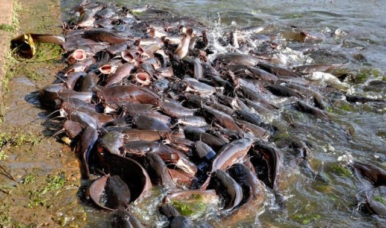

Ikan lele merupakan salah satu jenis ikan yang sanggup hidup dalam kepadatan tinggi. Ikan ini memiliki tingkat konversi pakan menjadi bobot tubuh yang baik. Dengan sifat seperti ini, budidaya ikan lele akan sangat menguntungkan bila dilakukan secara intensif.

Ada berbagai macam tipe kolam yang bisa digunakan untuk tempat budidaya ikan lele. Setiap tipe kolam memiliki keunggulan dan kelemahan masing-masing bila ditinjau dari segi usaha budidaya. Untuk memutuskan kolam apa yang cocok, harap pertimbangkan kondisi lingkungan, ketersediaan tenaga kerja dan sumber dana ada.
Sebelum benih ikan lele ditebarkan, kolam harus dikeringkan telebih dahulu. Lama pegeringan berkisar 3-7 hari atau bergantung pada teriknya sinar matahari. Sebagai patokan, apabila permukaan tanah sudah retak-retak, kolam bisa dianggap sudah cukup kering. Pengeringan kolam bertujuan untuk memutus keberadaan mikroorganisme jahat yang menyebabkan bibit penyakit. Mikroorganisme tersebut bisa bekembang dari periode budidaya ikan lele sebelumnya. Dengan pengeringan dan penjemuran, sebagian besar mikroorganisme patogen akan mati.
Pengapuran berfungsi untuk menyeimbangkan keasaman kolam dan membantu memberantas mikroorganisme patogen. Jenis kapur yang digunakan adalah dolomit atau kapur tohor. Pengapuran dilakukan dengan cara ditebar secara merata di permukaan dasar kolam. Setelah ditebari kapur, balik tanah agar kapur meresap ke bagian dalam. Dosis yang diperlukan untuk pengapuran adalah 250-750 gram per meter persegi, atau tergantung pada derajat keasaman tanah. Semakin asam tanah semakin banyak kapur yang dibutuhkan.
Langkah selanjutnya adalah pemupukan. Gunakan paduan pupuk organik ditambah urea dan TSP. Jenis pupuk organik yang dianjurkan adalah pupuk kandang atau pupuk kompos. Dosisnya sebanyak 250-500 gram per meter persegi. Sedangkan pupuk kimianya adalah urea dan TSP masing-masing 15 gram dan 10 gram per meter persegi. Pemupukan dasar kolam bertujuan untuk menyediakan nutrisi bagi biota air seperti fitoplankton dan cacing. Biota tersebut berguna untuk makanan alami ikan lele.
Ketinggian air yang ideal untuk budidaya ikan lele adalah 100-120 cm. Pengisian kolam dilakukan secara bertahap. Setelah kolam dipupuk, isi dengan air sampai batas 30-40 cm. Biarkan kolam tersinari matahari selama satu minggu. Dengan kedalaman seperti itu, sinar matahari masih bisa tembus hingga dasar kolam dan memungkinkan biota dasar kolam seperti fitoplankton tumbuh dengan baik. Air kolam yang sudah ditumbuhi fitoplankton berwarna kehijauan.
Tingkat kesuksesan budidaya ikan lele sangat ditentukan oleh kualitas benih yang ditebar. Ada beberapa jenis ikan lele yang biasa dibudidayakan di Indonesia. Silahkan baca lebih lanjut mengenai jenis-jenis ikan lele budidaya.
Benih yang ditebar harus benih yang benar-benar sehat. Ciri-ciri benih yang sehat gerakannya lincah, tidak terdapat cacat atau luka dipermukaan tubuhnya, bebas dari bibit penyakit dan gerakan renangnya normal. Untuk menguji gerakannya, tempatkan ikan pada arus air. Jika ikan tersebut menantang arah arus air dan bisa bertahan berarti gerakan renangnya baik.
Ukuran benih untuk budidaya ikan lele biasanya memiliki panjang sekitar 5-7 cm. Usahakan ukurannya rata agar ikan bisa tumbuh dan berkembang serempak. Dari benih sebesar itu, dalam jangka waktu pemeliharaan 2,5-3,5 bulan akan didapatkan lele ukuran konsumsi sebesar 9-12 ekor per kilogram.
Sebelum benih ditebar, lakukan penyesuaian iklim terlebih dahulu. Caranya, masukan benih dengan wadahnya (ember/jeriken) ke dalam kolam. Biarkan selama 15 menit agar terjadi penyesuaian suhu tempat benih dengan suhu kolam sebagai lingkungan barunya. Miringkan wadah dan biarkan benih keluar dengan sendirinya. Metode ini bermanfaat mencegah stres pada benih.
Tebarkan benih ikan lele ke dalam kolam dengan kepadatan 200-400 ekor per meter persegi. Semakin baik kualitas air kolam, semakin tinggi jumlah benih yang bisa ditampung. Hendaknya tinggi air tidak lebih dari 40 cm saat benih ditebar. Hal ini menjaga agar benih ikan bisa menjangkau permukaan air untuk mengambil pakan atau bernapas. Pengisian kolam berikutnya disesuaikan dengan ukuran tubuh ikan sampai mencapai ketinggian air yang ideal.
Pakan merupakan komponen biaya terbesar dalam budidaya ikan lele. Ada banyak sekali merek dan ragam pakan di pasaran. Pakan ikan lele yang baik adalah pakan yang menawarkan Food Convertion Ratio (FCR) lebih kecil dari satu. FCR adalah rasio jumlah pakan berbanding pertumbuhan daging. Semakin kecil nilai FCR, semakin baik kualitas pakan.
Sebagai ikan karnivora, pakan ikan lele harus banyak mengandung protein hewani. Secara umum kandungan nutrisi yang dibutuhkan ikan lele adalah protein (minimal 30%), lemak (4-16%), karbohidrat (15-20%), vitamin dan mineral.
Pakan harus diberikan sesuai dengan kebutuhan. Secara umum setiap harinya ikan lele memerlukan pakan 3-6% dari bobot tubuhnya. Misalnya, ikan lele dengan bobot 50 gram memerlukan pakan sebanyak 2,5 gram (5% bobot tubuh) per ekor. Kemudian setiap 10 hari ambil samplingnya, lalu timbang dan sesuaikan lagi jumlah pakan yang diberikan. Dua minggu menjelang panen, persentase pemberian pakan dikurangi menjadi 3% dari bobot tubuh.
Jadwal pemberian pakan sebaiknya disesuaikan dengan nafsu makan ikan. Frekuensinya 4-5 kali sehari. Frekuensi pemberian pakan pada ikan yang masih kecil harus lebih sering. Waktu pemberian pakan bisa pagi, siang, sore dan malam hari.
Selain pakan utama, bisa dipertimbangkan juga untuk memberi pakan tambahan. Pemberian pakan tambahan sangat menolong menghemat biaya pengeluaran pakan yang menguras kantong. Apabila kolam kita dekat dengan pelelangan ikan, bisa dipertimbangkan pemberian ikan rucah segar. Ikan rucah adalah hasil ikan tangkapan dari laut yang tidak layak dikonsumsi manusia karena ukuran atau cacat dalam penangkapannya. Bisa juga dengan membuat belatung dari campuran ampas tahu.
Keong mas dan limbah ayam bisa diberikan dengan pengolahan terlebih dahulu. Pengolahannya bisa dilakukan dengan perebusan. Kemudian pisahkan daging keong mas dengan cangkangnya, lalu dicincang. Untuk limbah ayam bersihkan bulu-bulunya sebelum diumpankan pada lele.
Hal penting lain dalam budidaya ikan lele adalah pengelolaan air kolam. Untuk mendapatkan hasil maksimal kualitas dan kuantitas air harus tetap terjaga. Awasi kualitas air dari timbunan sisa pakan yang tidak habis di dasar kolam. Timbunan tersebut akan menimbulkan gas amonia atau hidrogen sulfida yang dicirikan dengan adanya bau busuk.
Apabila sudah muncul bau busuk, buang sepertiga air bagian bawah. Kemudian isi lagi dengan air baru. Frekuensi pembuangan air sangat tergantung pada kebiasaan pemberian pakan. Apabila dalam pemberian pakan banyak menimbulkan sisa, pergantian air akan lebih sering dilakukan.
Hama yang paling umum dalam budidaya ikan lele antara lain hama predator seperti linsang, ular, sero, musang air dan burung. Sedangkan hama yang menjadi pesaing antara lain ikan mujair. Untuk mencegahnya yaitu dengan memasang saringan pada jalan masuk dan keluar air atau memasang pagar di sekeliling kolam.
Untuk mencegah timbulnya penyakit infeksi adalah dengan menjaga kualitas air, mengontrol kelebihan pakan, menjaga kebersihan kolam, dan mempertahankan suhu kolam pada kisaran 28oC. Selain penyakit infeksi, ikan lele juga bisa terserang penyakit non-infeksi seperti kuning, kekurangan vitamin dan lain-lain.
Ikan lele bisa dipanen setelah mencapai ukuran 9-12 ekor per kg. Ukuran sebesar itu bisa dicapai dalam tempo 2,5-3,5 bulan dari benih berukuran 5-7 cm. Berbeda dengan konsumsi domestik, ikan lele untuk tujuan ekspor biasanya mencapai ukuran 500 gram per ekor.
Satu hari (24 jam) sebelum panen, sebaiknya ikan lele tidak diberi pakan agar tidak buang kotoran saat diangkut. Pada saat ikan lele dipanen lakukan sortasi untuk misahkan lele berdasarkan ukurannya. Pemisahan ukuran berdampak pada harga. Ikan lele yang sudah disortasi berdasarkan ukuran akan meningkatkan pendapatan bagi peternak.
sumber : alamtani.com
Leave a comment